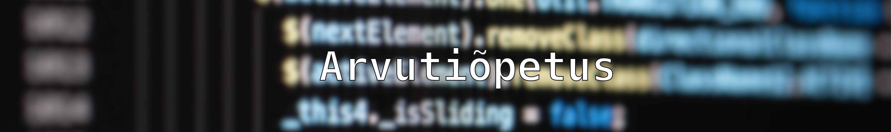

Tunnitöö (16.10.2025)
Sissejuhatus on oluline osa igasugusest kirjutamisprotsessist , olgu selleks akadeemiline essee, teaduslik artikkel või loominguline teos.See mitte üksnes ei tutvusta lugejat käsitletava teema või probleemi, vaid loob ka esmase arusaama autorist ja tema lähenemisest. Hea sissejuhatus peaks olema kaasahaarav, äratama huvi ja pakkuma konteksti, milles teemat käsitletakse. Selge eesmärk ja teemaliste küsimuste püstitamine annavad lugejale märku, mida oodata, ning motiveerivad edasi lugema.
Sissejuhatus peaks olema piisavalt informatiivne , et anda ülevaade peamistest mõtetest ja lähtepunktidest, kuid samas mitte liiga detailne, et mitte varjutada tulevasi arutelusid. See on koht, kus autor võib esitleda oma argumentide tausta ja näidata, miks teema on oluline või aktuaalne . Igal juhul peab sissejuhatus olema struktureeritud ja sujuvalt viima lugejat teksti põhiosasse, et lugeja tunneks end kindlalt ja kaasatuna, kui ta edasi läheb.
Kuna esimesed muljed on sageli määravad , on sissejuhatus kõigi kirjutajate jaoks kriitiline etapp. See on lugemise alguspunkt, kus lugeja otsustab, kas jätkata või mitte.Seetõttu on soovitatav sellele osale erilist tähelepanu pöörata, et tagada sisu tõhus ja mõjuv esitamine. Eduka sissejuhatuse loomine on kunst, mis nõuab oskust ja loomingulisust, et luua dialooge ja mõtteid, mis peegeldavad autori häälest ja vaatenurgast.
Keskele joondusega teksti puhul paigutatakse read lehe või veeru kesktelje suhtes võrdselt, luues sümmeetrilise, kuid ebakorrapäraste servadega ploki. See joondusstiil annab tekstile koheselt piduliku või graafilise ilme, mistõttu seda kasutatakse harilikult pealkirjades, lühikestes tsitaatides, formaalsetel kutsetel ja luules. Keskjoondus aitab luua tugeva visuaalse fookuspunkti, mis tõmbab lugeja pilku otse lehe keskele, tasakaalustades kompositsiooni.Kuigi see meetod sobib hästi lühikestele plokkidele, muutub see pikema sisu puhul kiiresti problemaatiliseks. Valik keskjoondust kasutada on seega pigem esteetiline ja disainikeskne kui funktsionaalne valik. Edukas rakendamine nõuab disainerilt hoolikat tähelepanu rea pikkusele – lühikesed ja hoolikalt jaotatud read on hädavajalikud esteetilise tasakaalu säilitamiseks. Digitaalses ja trükidisainis kasutatakse keskjoondust eelkõige siis, kui teksti eesmärk on edastada lühike ja võimas sõnum, luues minimalistliku ja tasakaalustatud visuaalse kompositsiooni.
Vasakpoolne tekst, tuntud ka kui "left-aligned text", on tavaline tekstipaigutus, mis seab kõik tekstiread vasakule servale. See on kõige levinum tüüp tekstipaigutus, mida kasutatakse erinevates dokumentides, sealhulgas raamatutes, ajakirjades ja veebilehtedel. Vasakpoolse teksti peamiseks eeliseks on selle lihtsus ja loetavus, kuna see järgib meie lugemise looduslikku rütmi, mis soosib vasakult paremale edasiviimist.
Vasakpoolne tekst loob ka visuaalselt meeldiva ja harmoonilise välimuse, kuna see loob ühtse joone vasakul küljel, mis muudab teksti hõlpsasti jälgitavaks. Erinevalt keskelt joondatud või paremale joondatud tekstist, kus silm peab pidevalt kohandama, kus alustada järgmise rea lugemist, võimaldab vasakpoolne paigutus lugejal siseneda tekstivoolu ilma katkestusteta. Selle tõttu on see populaarne valik mitte ainult formaalsetes kirjalikes töödes, vaid ka igapäevases suhtluses.
Kokkuvõttes on vasakpoolne tekst usaldusväärne ja tõhus viis teabe edastamiseks. See aitab lugejat keskenduda sisule, ilma et see oleks koormav. Seetõttu on see olnud ja jääb paljude kirjutamisstiilide aluseks, mis soosivad selgust ja loetavust.
Parempoolne tekst, eesti keeles tuntud ka kui "parempoolne joondus", viitab teksti vormindamise meetodile, kus tekst on joondatud veeru paremale küljele, samas jättes vasaku külje mittetäielikuks. See formaat võib anda dokumentidele ja esitlustele visuaalselt atraktiivse ilme, luues dünaamilisema ja huvitavama lugemiskogemuse. Parempoolse joondamise kasutamine võib sobida loominguliste projektide, reklaamide ja esitlemise materjalide jaoks, kus soovitakse rõhutada visuaalset mõju või teavateid ja sõnumeid, mis ei nõua traditsioonilist joondust.
Samas võib parempoolse teksti kasutamine teatud olukordades tekitada ka segadust, eriti akadeemilistes ja ametlikes kirjutistes, kus selgus ja struktureeritud lähenemine on oluline. Liigselt parempoolne joondamine võib muuta teksti raskesti loetavaks ja vähendada sellele osutatava tähelepanu kvaliteeti. Seetõttu on oluline valida sobiv formaati vastavalt kontekstile ja sihtrühmale, et saavutada soovitud kommunikatsiooniefekt. Kombineerides parempoolset tekstiformaati teiste visuaalsete elementidega, saab luua tasakaalustatud ja atraktiivse esitluse, mis haarab lugejate tähelepanu ja edastab sõnumi tõhusalt.
Väljajuhatus on oluline teema, mis peegeldab meie igapäevaelu ja suhtlemist. See mõisted viitab sellele, kuidas me suudame juhatada, suunata ja inspireerida teisi oma mõtete, ideede ja tegevustega. Väljajuhatus ei piirdu ainult ametlikult määratud juhtide või tegelastega; see kehtib ka igasugustele elualadele, kus inimesed võivad olla mõjude all. Olgu need õpetajad, kolleegid või sõbrad – igaühel on võimalus olla välja juhiks, aidates teistel leida õige tee, jagades teadmisi ja toetades üksteist rasketel hetkedel.Väljajuhatuse protsess nõuab empaatiat, eneseteadlikkust ja usaldusväärsust. Inimesed, kes suudavad teisi juhtida, mõistavad oma jälgijate vajadusi ja soove ning suudavad neile pakkuda vajalikku tuge ja suunamist. Samuti on oluline kiirus ja paindlikkus – olukordade muutumine võib vajada kiireid ja efektiivseid otsuseid. Koostöö, avatud suhtlemine ja positiivsete suhete loomine on väljajuhatuse nurgakivid.
Nimi: x
Sünnipäev: DD.MM.YYYY
Kodumaakond: Tartumaa
Põlvamaa
Valgamaa
Kooli meiliaadress: x@opilased.nrg.edu.ee
Söögikorrad 16.10.2025
Söögikord
Valik
Hommikusöök
1. toit
Lõunasöök
2. toit
Õhtusöök
3. toit